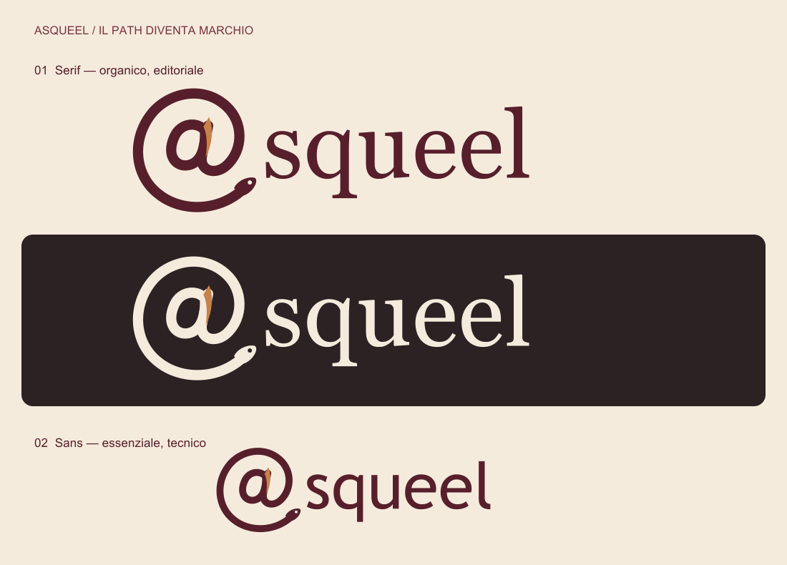

Proposte precedenti e palette
Proposta precedente: @squeel
Nuova proposta / @squeel
Il path diventa marchio.
L’anguilla forma la @ iniziale: un richiamo a @customer_id e ai percorsi relazionali. Nome e package restano asqueel.

SVG serif · SVG sans · Simbolo @
Un’anguilla, una q.
Rosso profondo, luce di rame.
La curva dell’anguilla richiama la q di SQL. Il nome in minuscolo accosta una forma organica a un carattere serif, caldo e riconoscibile.
Cartella colori
Rosso cupo per il marchio; pergamena per i fondi; inchiostro per il testo. Rame, ruggine e ocra sono accenti per dettagli e superfici.
Il simbolo / 32 · 64 · 128 px